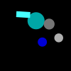
(1)
More than half the shapes are gray circles.
At most half the circles are gray.
At least no cyan shape is a circle.
At most a third of the shapes is cyan.
At least half the gray shapes are circles.
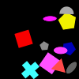
(2)
More than a quarter of the pentagons are yellow.
Less than a third of the shapes are ellipses.
At most all shapes are red triangles.
At most all ellipses are green.
Exactly half the ellipses are magenta.
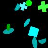
(3)
At most three quarters of the shapes are cyan.
At most two thirds of the semicircles are cyan.
Exactly a third of the ellipses is green.
At most two thirds of the ellipses are cyan.
More than two thirds of the shapes are gray.
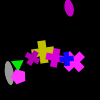
(4)
Less than a quarter of the shapes are yellow crosses.
At most half the shapes are magenta crosses.
At most two thirds of the shapes are crosses.
Exactly no shape is a magenta pentagon.
Exactly no shape is a magenta pentagon.
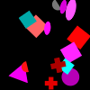
(5)
More than two thirds of the shapes are red squares.
Less than a third of the shapes are magenta circles.
Less than three quarters of the shapes are red crosses.
Not no ellipse is magenta.
Not half the magenta shapes are circles.
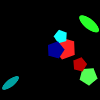
(6)
More than two thirds of the pentagons are blue.
At most a quarter of the shapes are pentagons.
Less than half the green shapes are pentagons.
Not three quarters of the shapes are green pentagons.
Not three quarters of the shapes are pentagons.
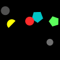
(7)
Not two thirds of the pentagons are green.
At least three quarters of the gray shapes are circles.
Exactly half the circles are green.
Exactly a third of the shapes are circles.
At least half the shapes are gray circles.
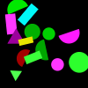
(8)
Exactly three quarters of the rectangles are green.
At most all green shapes are circles.
At least a third of the shapes is red.
More than half the green shapes are circles.
At least three quarters of the cyan shapes are circles.
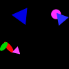
(9)
At least a third of the shapes are red ellipses.
More than no shape is a magenta circle.
More than a quarter of the shapes are red ellipses.
Less than half the ellipses are red.
Less than two thirds of the shapes are ellipses.
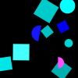
(10)
At least half the shapes are cyan.
More than half the shapes are cyan squares.
Less than half the squares are blue.
At least three quarters of the cyan shapes are squares.
At least half the shapes are blue.
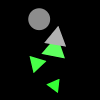
(11)
At most a third of the shapes are green triangles.
At most a third of the triangles is gray.
Less than a third of the shapes are green triangles.
More than three quarters of the shapes are green triangles.
Not no gray shape is a triangle.
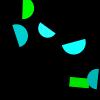
(12)
At least half the shapes are cyan semicircles.
At most three quarters of the semicircles are green.
Not two thirds of the semicircles are cyan.
At most half the semicircles are cyan.
Less than all shapes are cyan semicircles.
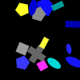
(13)
Less than a quarter of the shapes are yellow rectangles.
More than a quarter of the shapes are crosses.
More than no shape is red.
At most half the squares are gray.
At least half the cyan shapes are rectangles.
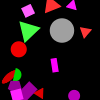
(14)
At least three quarters of the shapes are red.
Exactly a quarter of the shapes are magenta.
Not a quarter of the shapes are ellipses.
At most three quarters of the green shapes are triangles.
Not no shape is a cross.
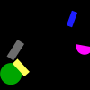
(15)
More than no shape is a yellow rectangle.
More than a third of the shapes are green circles.
Not no magenta shape is a semicircle.
At least a quarter of the semicircles are magenta.
At least two thirds of the shapes are rectangles.

(16)
More than a third of the shapes is green.
Exactly all shapes are rectangles.
At least a third of the ellipses is yellow.
At most half the shapes are yellow triangles.
Not half the ellipses are green.
(17)
Less than a third of the shapes are triangles.
Not all shapes are yellow.
Not all shapes are yellow ellipses.
More than three quarters of the squares are cyan.
At most three quarters of the shapes are yellow triangles.
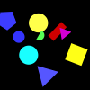
(18)
At least a third of the shapes are blue pentagons.
Exactly a quarter of the shapes are cyan.
At least three quarters of the blue shapes are circles.
At least two thirds of the shapes are green semicircles.
More than a quarter of the shapes are magenta.
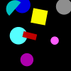
(19)
Less than three quarters of the shapes are gray circles.
Not two thirds of the magenta shapes are circles.
At most half the shapes are magenta.
At most half the cyan shapes are semicircles.
At least a third of the squares is gray.
(20)
At most half the shapes are gray triangles.
Not all triangles are cyan.
More than no ellipse is yellow.
Not two thirds of the shapes are gray triangles.
At most three quarters of the yellow shapes are rectangles.
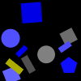
(21)
At least a quarter of the circles are gray.
At most a third of the yellow shapes are rectangles.
Not no pentagon is gray.
More than no shape is a blue circle.
At least a third of the circles is gray.
(22)
At most half the shapes are magenta circles.
Not a quarter of the shapes are magenta.
More than a quarter of the shapes are magenta.
At most three quarters of the shapes are circles.
Not a quarter of the circles are yellow.
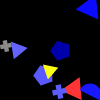
(23)
Not a third of the semicircles is blue.
At least two thirds of the gray shapes are crosses.
Exactly half the shapes are blue.
Less than a third of the shapes is blue.
Not no red shape is a triangle.
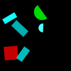
(24)
Exactly two thirds of the shapes are cyan rectangles.
Exactly no shape is red.
More than half the shapes are rectangles.
Not no cyan shape is a rectangle.
Not no cyan shape is a rectangle.
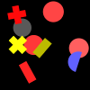
(25)
At most all blue shapes are semicircles.
Exactly all shapes are red.
Less than a third of the shapes are gray semicircles.
More than three quarters of the shapes are red rectangles.
Exactly no shape is red.
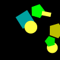
(26)
Less than a third of the yellow shapes are rectangles.
Exactly half the shapes are cyan circles.
More than no shape is a cyan square.
Less than a quarter of the shapes are green.
More than a quarter of the shapes are cyan.
(27)
At least a third of the shapes are ellipses.
Not no shape is a magenta pentagon.
At most two thirds of the shapes are ellipses.
More than two thirds of the yellow shapes are ellipses.
More than no shape is a cyan rectangle.
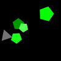
(28)
At least two thirds of the shapes are gray pentagons.
Less than half the shapes are green pentagons.
Not no shape is a green pentagon.
Not no shape is a green pentagon.
More than a quarter of the shapes are crosses.
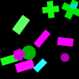
(29)
At most a third of the magenta shapes are rectangles.
Less than half the shapes are rectangles.
At least no shape is a triangle.
Less than three quarters of the rectangles are green.
At most half the shapes are circles.
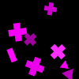
(30)
More than three quarters of the shapes are magenta.
Not half the shapes are magenta crosses.
At most a quarter of the magenta shapes are rectangles.
Exactly no magenta shape is a pentagon.
Not all shapes are magenta triangles.
(31)
At most all magenta shapes are triangles.
At most half the shapes are red semicircles.
Less than a quarter of the shapes are green rectangles.
Less than half the shapes are magenta triangles.
At least half the cyan shapes are rectangles.
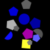
(32)
Exactly no circle is red.
More than three quarters of the blue shapes are pentagons.
Exactly a quarter of the shapes are blue pentagons.
Exactly three quarters of the shapes are blue semicircles.
At most half the circles are blue.
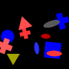
(33)
Less than two thirds of the shapes are crosses.
At most three quarters of the squares are blue.
At least half the gray shapes are crosses.
More than a third of the shapes are crosses.
At most a third of the shapes are blue circles.
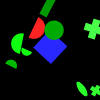
(34)
At most a third of the shapes are crosses.
Less than two thirds of the shapes are green.
Not no shape is a gray ellipse.
More than two thirds of the red shapes are semicircles.
Less than three quarters of the shapes are green semicircles.
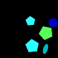
(35)
Exactly no cyan shape is a circle.
At most two thirds of the green shapes are pentagons.
More than a quarter of the rectangles are cyan.
Not no shape is a cyan circle.
Not a quarter of the shapes are green.

(36)
At most half the ellipses are green.
Exactly all pentagons are gray.
More than two thirds of the shapes are magenta.
More than a third of the shapes is green.
At least three quarters of the shapes are gray triangles.
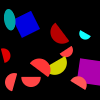
(37)
Exactly three quarters of the semicircles are red.
Less than a third of the ellipses is cyan.
More than a third of the magenta shapes are squares.
Less than three quarters of the shapes are squares.
Less than two thirds of the shapes are yellow semicircles.
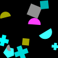
(38)
Exactly a third of the circles is yellow.
Exactly a third of the semicircles is yellow.
At most all semicircles are gray.
At most a third of the shapes are cyan crosses.
More than a quarter of the shapes are cyan crosses.
(39)
More than a third of the ellipses is gray.
More than a third of the shapes is yellow.
Exactly a third of the shapes are semicircles.
Exactly a quarter of the shapes are yellow ellipses.
Less than a quarter of the ellipses are yellow.
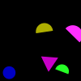
(40)
Not a quarter of the shapes are semicircles.
More than two thirds of the magenta shapes are semicircles.
At most a third of the shapes are yellow semicircles.
Exactly all shapes are semicircles.
Exactly all circles are blue.

(41)
At least a quarter of the triangles are yellow.
Exactly a third of the shapes are crosses.
At least a third of the shapes is magenta.
Less than two thirds of the crosses are green.
At least half the shapes are yellow.
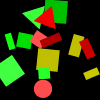
(42)
Less than all shapes are red rectangles.
At most a quarter of the shapes are red.
Not all shapes are yellow rectangles.
More than a third of the shapes are circles.
At most half the shapes are red squares.
(43)
At most a quarter of the red shapes are semicircles.
More than a quarter of the triangles are red.
Not a third of the semicircles is red.
More than no shape is a magenta ellipse.
More than two thirds of the shapes are red.
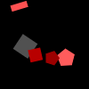
(44)
Less than three quarters of the shapes are red.
More than half the shapes are red pentagons.
At least a quarter of the shapes are red.
More than half the shapes are red pentagons.
More than a third of the rectangles is red.

(45)
Not a third of the circles is blue.
At most half the circles are green.
Less than half the blue shapes are pentagons.
At most three quarters of the ellipses are blue.
More than a third of the shapes are circles.
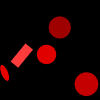
(46)
Exactly no shape is red.
Exactly no shape is red.
Not no circle is red.
Not half the shapes are red circles.
At most a quarter of the red shapes are circles.
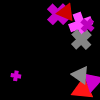
(47)
At most all red shapes are triangles.
At least half the triangles are blue.
Not a quarter of the triangles are magenta.
At least two thirds of the shapes are magenta.
At most half the magenta shapes are crosses.
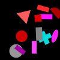
(48)
At least three quarters of the triangles are red.
At least a quarter of the squares are cyan.
Less than a quarter of the shapes are semicircles.
Not a third of the shapes is gray.
At least a quarter of the shapes are circles.
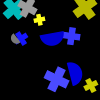
(49)
Less than two thirds of the shapes are crosses.
Less than all shapes are gray crosses.
Less than a third of the blue shapes are semicircles.
More than no semicircle is blue.
Less than a quarter of the shapes are cyan crosses.
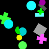
(50)
Not a quarter of the green shapes are semicircles.
More than a third of the gray shapes are rectangles.
At most a third of the shapes are circles.
At least half the rectangles are cyan.
Less than a third of the shapes is green.
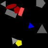
(51)
At least a quarter of the shapes are gray.
More than two thirds of the gray shapes are triangles.
At least two thirds of the shapes are pentagons.
More than half the gray shapes are triangles.
More than no shape is a gray triangle.

(52)
At least half the shapes are circles.
At most a third of the circles is red.
Not half the yellow shapes are pentagons.
Less than a third of the shapes are pentagons.
Not two thirds of the shapes are gray.
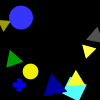
(53)
Exactly a quarter of the blue shapes are triangles.
At least three quarters of the shapes are yellow.
Exactly no triangle is green.
Not all crosses are blue.
Exactly all shapes are crosses.
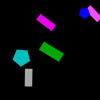
(54)
More than a quarter of the pentagons are gray.
Not no pentagon is magenta.
More than a quarter of the shapes are blue pentagons.
At least no shape is a magenta rectangle.
More than a third of the crosses is cyan.
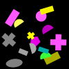
(55)
At most half the shapes are yellow rectangles.
Exactly no shape is a green semicircle.
At least a quarter of the shapes are yellow rectangles.
Less than three quarters of the shapes are gray semicircles.
More than a third of the gray shapes are ellipses.
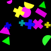
(56)
Exactly a third of the circles is magenta.
Exactly no shape is green.
Not no semicircle is green.
More than no shape is a blue triangle.
At most three quarters of the circles are magenta.
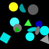
(57)
Exactly no blue shape is a circle.
At most three quarters of the shapes are cyan squares.
Less than half the shapes are green.
Exactly no green shape is a rectangle.
Exactly a quarter of the cyan shapes are ellipses.
(58)
More than a quarter of the magenta shapes are triangles.
At least half the shapes are magenta semicircles.
More than three quarters of the rectangles are magenta.
More than two thirds of the rectangles are magenta.
Less than half the rectangles are magenta.
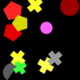
(59)
More than no shape is cyan.
Exactly no yellow shape is a cross.
More than a third of the gray shapes are semicircles.
At least a quarter of the shapes are yellow crosses.
Exactly a quarter of the shapes are red circles.

(60)
Less than half the shapes are blue.
More than half the gray shapes are crosses.
Less than half the semicircles are blue.
At most half the shapes are gray semicircles.
Exactly half the shapes are blue circles.
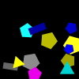
(61)
Less than two thirds of the shapes are gray.
Not half the shapes are pentagons.
At most half the shapes are cyan pentagons.
Less than two thirds of the yellow shapes are pentagons.
Less than three quarters of the shapes are yellow.
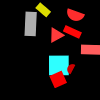
(62)
Exactly two thirds of the shapes are magenta.
Exactly two thirds of the shapes are cyan.
More than three quarters of the cyan shapes are triangles.
Not all shapes are gray.
More than a quarter of the shapes are cyan squares.
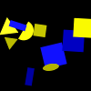
(63)
At least no shape is a yellow square.
More than a quarter of the shapes are ellipses.
More than a quarter of the shapes are gray.
Exactly no yellow shape is a cross.
At most two thirds of the shapes are yellow.
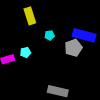
(64)
More than a quarter of the pentagons are magenta.
Not all blue shapes are rectangles.
More than no blue shape is a rectangle.
At least half the shapes are rectangles.
Exactly no shape is a rectangle.
(65)
More than a quarter of the shapes are green.
More than no shape is cyan.
Less than half the cyan shapes are triangles.
Less than three quarters of the shapes are triangles.
At most a third of the shapes are green squares.
(66)
Not all gray shapes are triangles.
Exactly a quarter of the circles are cyan.
Exactly no shape is magenta.
Exactly no pentagon is red.
Exactly a third of the cyan shapes are rectangles.
(67)
Not two thirds of the pentagons are blue.
At least a quarter of the shapes are blue pentagons.
Not no magenta shape is an ellipse.
Exactly a third of the blue shapes are semicircles.
More than no shape is a green circle.
(68)
At most two thirds of the shapes are triangles.
Exactly a quarter of the shapes are yellow triangles.
Less than a third of the yellow shapes are ellipses.
More than two thirds of the yellow shapes are rectangles.
More than two thirds of the shapes are red.
(69)
Exactly a quarter of the ellipses are cyan.
Not a quarter of the shapes are cyan pentagons.
Exactly a quarter of the shapes are magenta ellipses.
Less than a third of the shapes is green.
More than a third of the shapes are circles.
(70)
Not a third of the shapes are magenta ellipses.
At least three quarters of the shapes are magenta.
At least no green shape is a semicircle.
Exactly all shapes are magenta.
More than a third of the shapes is gray.

(71)
Exactly a third of the shapes are pentagons.
Exactly all shapes are magenta pentagons.
Less than three quarters of the squares are red.
More than no shape is a red pentagon.
More than a third of the pentagons is cyan.
(72)
At least half the shapes are rectangles.
Less than a third of the magenta shapes are rectangles.
Less than three quarters of the red shapes are rectangles.
Not half the rectangles are yellow.
Not no red shape is a rectangle.
(73)
Not a third of the shapes is red.
At least a quarter of the shapes are cyan ellipses.
At least half the shapes are red semicircles.
Exactly all shapes are cyan ellipses.
At least a quarter of the shapes are yellow crosses.
(74)
Exactly a quarter of the shapes are yellow squares.
At least no shape is yellow.
More than half the shapes are yellow squares.
At least two thirds of the shapes are yellow squares.
More than a quarter of the shapes are cyan.
(75)
At least a quarter of the shapes are yellow circles.
At most a quarter of the shapes are red.
Exactly no circle is green.
At most a quarter of the shapes are green rectangles.
More than three quarters of the shapes are rectangles.
(76)
Exactly half the ellipses are yellow.
Not a quarter of the triangles are yellow.
Not a quarter of the yellow shapes are pentagons.
Exactly three quarters of the shapes are red pentagons.
More than no shape is a yellow triangle.
(77)
Exactly a quarter of the shapes are circles.
More than no red shape is an ellipse.
At most half the shapes are blue semicircles.
At most all shapes are blue ellipses.
Not a third of the shapes are ellipses.
(78)
At most all shapes are cyan pentagons.
Not a quarter of the shapes are cyan pentagons.
More than half the pentagons are magenta.
Less than three quarters of the triangles are cyan.
Not two thirds of the shapes are cyan ellipses.
(79)
At most all ellipses are cyan.
Not three quarters of the shapes are cyan circles.
Exactly a third of the shapes is cyan.
Exactly a quarter of the green shapes are ellipses.
At least two thirds of the magenta shapes are circles.
(80)
Not a third of the shapes are magenta triangles.
More than two thirds of the shapes are blue.
At least half the shapes are semicircles.
At least two thirds of the shapes are blue triangles.
Not three quarters of the shapes are blue semicircles.
(81)
Less than a quarter of the shapes are squares.
At most a third of the magenta shapes are semicircles.
Exactly half the shapes are red squares.
At most a quarter of the shapes are red rectangles.
At most half the shapes are magenta.

(82)
Exactly no shape is a yellow cross.
Less than three quarters of the shapes are squares.
At least a third of the magenta shapes are crosses.
At least a quarter of the shapes are cyan crosses.
Exactly no shape is cyan.
(83)
At least half the shapes are cyan triangles.
Less than a third of the shapes is cyan.
At least a third of the triangles is blue.
At least a third of the shapes is blue.
More than half the shapes are triangles.
(84)
At least two thirds of the shapes are red pentagons.
At least a quarter of the pentagons are yellow.
Not three quarters of the shapes are yellow.
Exactly three quarters of the shapes are yellow squares.
Exactly a third of the pentagons is red.
(85)
More than a third of the red shapes are ellipses.
Exactly no red shape is an ellipse.
Less than a quarter of the red shapes are ellipses.
At most a third of the shapes are triangles.
Exactly no red shape is a triangle.
(86)
At least three quarters of the shapes are green crosses.
Exactly three quarters of the shapes are ellipses.
More than three quarters of the green shapes are rectangles.
At least a third of the shapes are yellow semicircles.
More than three quarters of the shapes are cyan ellipses.
(87)
More than a third of the yellow shapes are pentagons.
Exactly a third of the shapes is yellow.
Exactly two thirds of the shapes are gray.
At least two thirds of the pentagons are yellow.
Not two thirds of the shapes are yellow rectangles.

(88)
More than three quarters of the crosses are magenta.
Less than two thirds of the cyan shapes are crosses.
At most a third of the shapes is cyan.
Less than a quarter of the shapes are cyan.
At most three quarters of the cyan shapes are crosses.

(89)
At least half the shapes are triangles.
At most a quarter of the triangles are yellow.
Less than half the shapes are blue semicircles.
At most a third of the shapes are red squares.
More than a quarter of the triangles are green.
(90)
At most all shapes are magenta ellipses.
More than half the magenta shapes are ellipses.
Not three quarters of the blue shapes are pentagons.
Not three quarters of the shapes are blue.
Not all ellipses are blue.
(91)
Less than half the red shapes are semicircles.
Less than a quarter of the circles are yellow.
Less than a third of the circles is gray.
At most a third of the shapes are circles.
Not two thirds of the yellow shapes are circles.
(92)
Less than a third of the shapes is cyan.
Not half the yellow shapes are semicircles.
Not a third of the shapes are gray ellipses.
Less than a third of the shapes is magenta.
At most three quarters of the shapes are magenta.
(93)
Not half the shapes are yellow circles.
Less than a quarter of the blue shapes are ellipses.
Not half the gray shapes are pentagons.
More than two thirds of the cyan shapes are semicircles.
Exactly two thirds of the shapes are blue.
(94)
At least half the triangles are gray.
At least a quarter of the cyan shapes are pentagons.
At least two thirds of the red shapes are crosses.
Exactly half the red shapes are squares.
More than two thirds of the shapes are red triangles.
(95)
At least half the shapes are yellow crosses.
Less than a quarter of the shapes are yellow.
At most two thirds of the shapes are yellow.
At least two thirds of the pentagons are yellow.
More than a quarter of the shapes are gray pentagons.
(96)
Exactly a third of the shapes are ellipses.
At most a third of the shapes is green.
Exactly two thirds of the shapes are ellipses.
At most half the shapes are blue semicircles.
Exactly a quarter of the green shapes are circles.
(97)
At most three quarters of the shapes are blue.
Exactly half the magenta shapes are rectangles.
Less than three quarters of the shapes are gray pentagons.
At most half the magenta shapes are rectangles.
At most two thirds of the shapes are circles.
(98)
At least three quarters of the yellow shapes are squares.
At most a third of the shapes are yellow squares.
Exactly two thirds of the yellow shapes are circles.
At least no shape is a yellow circle.
At most two thirds of the shapes are cyan.
(99)
At most a quarter of the cyan shapes are rectangles.
At least no shape is a magenta cross.
At most three quarters of the semicircles are gray.
At least a quarter of the shapes are crosses.
Exactly no shape is a gray cross.
(100)
Exactly three quarters of the crosses are gray.
At least half the squares are red.
At most half the shapes are blue.
Exactly a quarter of the magenta shapes are semicircles.
More than a quarter of the shapes are blue.